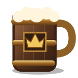
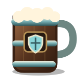
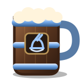
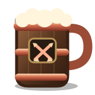
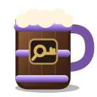
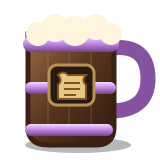
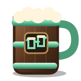

The Tavern Council & Delegated Leads
The Council governs the guild collectively. Leads own defined areas of responsibility. During an activity, operational authority sits with the relevant lead rather than with a permanent top-down chain of command.
Sets guild direction, resolves major issues, appoints leads, protects the culture and reviews consequential roster or conduct decisions. The in-game Guild Master is an administrative position and does not carry extra Council authority.

- Owns raid-night tactics and calls.
- Sets progression priorities and composition with input from role leads.
- Coordinates encounter preparation and review.
- Escalates major roster or conduct issues to Council.

- Supports tank development.
- Advises the Raid Leader on tank composition and encounter plans.
- Coordinates tank-specific mechanics.

- Coordinates healing CDs and assignments.
- Reviews healer performance and supports improvement.
- Advises the Raid Leader on healer composition.

- Helps DPS players interpret logs and improve.
- Advises on utility and DPS composition.
- Represents DPS concerns to the Raid Leader and Council.
- Does not independently decide benching.

- Coordinates Mythic Mondays.
- Helps form balanced groups and progression teams.
- Shares routes, dungeon strategy and useful resources.
- Represents M+ ideas and needs to Council.

- Maintains recruitment needs and adverts.
- Coordinates applicant conversations and onboarding.
- Tracks attendance and identifies roster gaps.
- Works with Raid/Role Leads on trial feedback.

- Champions the social side of the guild.
- Supports optional events and inclusive participation.
- Represents casual/community members to Council.
- Helps new members settle into the guild.
Who Decides What?
The aim is to make escalation obvious. Leads make routine decisions in their area; consequential guild-wide decisions go to Council.
Ways to Play
These describe how members participate in ODit. They are deliberately separate from leadership responsibilities and in-game permissions.
Raid Team
Two dedicated progression nights focused on achieving AoTC every season. Mythic may follow once AoTC is secured if roster and interest support it.
Mythic+
Regular keys at all appropriate levels, organised Mythic Mondays, score progression and groups built around learning and improvement.
Community
Social players, optional events, reclears, fun runs and guild activity outside mandatory progression. A real part of the guild, not a waiting room.
Alts
Alts are welcome across guild activities where appropriate. They do not need a separate management chain or dedicated officer structure.
Class / Spec Mentors
Mentors are experienced players who volunteer to help with a class or spec. They are not automatically officers and do not add another management layer.